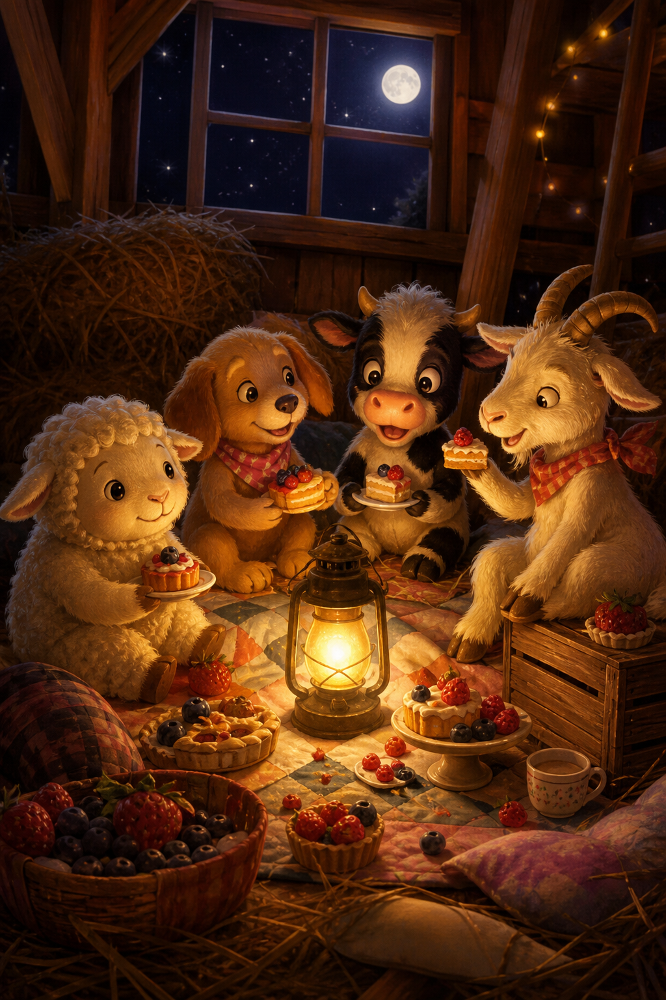

Star and the Midnight FeastStar of the Toy Farm · Book 2
From a kid, to a kid
Book 2 of Star of the Toy Farm. Best after Book 1, but written so new readers can catch up.
A sleepover, a show-and-tell prize, a riddle-loving goat, and a midnight feast — Star learns that bravery isn’t only mountains. It’s looking after friends when the night gets messy.
Main characters
Book 2 chapters
After the Mountain
If you are just meeting me: my name is Star. I am a toy sheep. I used to live on a shop shelf and wonder why I existed. Then I became Sophia’s birthday gift, found Bundle the dog, helped bring Mia the cow home, and climbed a hill in a backpack.
Now ordinary mornings felt… small.
“Leaders still have jobs,” Bundle reminded me, pacing the hay like a tiny security guard. “Keep the farm safe. Keep the secret. Only Sophia hears us — and only when Mum and Dad aren’t listening.”
Mia stretched. “Small mornings are when the next adventure sneaks up,” she said.
She was right.
Show and Tell
Sophia was excited to tell everyone at school what had happened — carefully, of course.
“Remember — you’ve got to act like toys,” she warned Bundle and me. “Be still. Don’t move. There will be parents and teachers!”
“I really want to get a prize!” she added.
We spent the morning practising being perfectly still. Bundle’s ear twitched once. I almost giggled. Sophia glared. We froze harder.
At the hall, parents and teachers assembled. Sophia was the first to go. “Since you love toys so much…” said the announcer — and she did get praise!
Best of all, she whispered on the way home, “There’s a new friend coming to the farm. A goat. His name is Barney.”
Barney the Riddle Goat
Barney was grass-coloured, with little horns and a brain full of riddles.
“What has hands but no body?” he asked the moment he arrived.
“A clock!” I said.
“What has a face but never needs a tissue?”
“Also a clock,” muttered Bundle, “if you ask me.”
Barney really was clever. Soon we all had nicknames:
Lina — Miss Business
Me — Floor Sailor
Barney — Smarty Pants
Mia — Adventurer
I liked Barney. Bundle worried. “Loud newcomers spoil secrets,” he whispered.
“Then we’ll teach him the rule,” I said. “That’s what leaders do.”
The Vacuum Strikes
One day the silver monster appeared again. It dared not more than a few turns before — too late! — it tugged my friends toward its hungry mouth.
“Oh no!” I cried.
I grabbed Bundle’s paw. Mia shoved Barney behind a chair leg. Barney started a riddle out of nerves — “What sucks but isn’t rude—” and I clapped a woolly hoof over his mouth just as Mrs Johns looked over.
We froze. Ordinary toys. Ordinary silence.
When the monster left, my friends were so relieved to see me. And how we laughed when Sophia came home — quietly, into pillows, so Mum wouldn’t hear.
Home still had adventures. Scary ones.
Invited!
After school, Sophia was jumping with excitement.
“I’m invited to a sleepover at Avril’s — and I told her all about you! I told Avril you can talk!” she said with a happy glow.
Bundle’s ears drooped. “You told—?”
“She’s my cousin,” Sophia said. “Just for one night. Same rule: freeze if grown-ups come.”
We all helped pack. Toothpaste, toothbrush, nightclothes, another set of clothes, board games. We mapped the route carefully, considering we might be up all night. Even five minutes of rest was crucial.
We got stuck in a huge traffic jam and took it better by pretending we had not noticed anything. Leaders stay calm. Mostly.
Meet Avril
“Meet Avril — she doesn’t talk much; she just plays sounds,” said Mr Johns, and then he left.
It was our secret time.
Avril was shocked to see us move and talk! We took turns introducing ourselves. Barney began a riddle. Bundle stepped on his hoof.
“Hope adults can’t see us talking,” I whispered.
“They say that if you do, you’ll become… well… ordinary toys forever,” said Bundle. “So we’d better be careful.”
Sophia looked at Avril. “Tonight, Avril can hear you too — but only us. If Mum or Dad or Auntie comes, freeze. Deal?”
“Deal,” said Avril, eyes shining.
I didn’t know if Bundle’s forever-ordinary warning was true. I only knew I didn’t want to find out.
Rules of the Night
Before the fun, we made rules. Leaders love rules (Bundle loves them most).
1. Whisper only.
2. Freeze if you hear footsteps.
3. Barney: no loud riddles near doors.
4. Chocolate crumbs go in the bin — not on wool.
Avril and Sophia planned the midnight feast in a notebook. Torch. Cake. Songs. Games on the lawn in the morning.
Away from our own farmyard, I felt like a real leader. Also a little bit small. Mia nudged me. “You’ve climbed a mountain in a bag,” she said. “You can climb a night in a cousin’s house.”
Midnight Feast
Once Avril’s parents were asleep, we turned on our torch and danced. We sang songs among ourselves — quietly.
Finally, we opened our basket. There was cake and chocolate. It was delicious! It tasted even better than grass!
Then — a creak in the hall.
Everyone froze. Torch off. Bundle became a statue dog. Barney’s riddle died in his throat. Footsteps… paused… went the other way. A door closed.
We waited ten whole heartbeats. Then Sophia whispered, “Feast continues — but softer.”
Softer cake is still cake. We finished every crumb we dared.
Morning Mess
We didn’t get up till ten o’clock — way past our usual time. We ate a little and headed into a fun morning of games on the lawn.
The only problem was not being seen by her parents. And the other problem…
“My, what a dirty bunch!” someone said from the doorway. “What on earth was that?”
Chocolate on my wool. Grass on Mia. A suspicious crumb on Barney’s horn.
Panic!
We scrambled to look ordinary — flopped in a neat row, faces blank, while Sophia mumbled something about “outdoor games” and whisked us toward the bag. Avril stuffed wrappers into her pocket like a secret agent.
We were happy. Sleepovers were the best. Also the messiest.
The Monster Bath
Back home, a different kind of monster waited — the washing machine!
(Because of the mess. Cause, then effect. Bundle said that twice.)
I was so dizzy I fell about inside. A few long turns later, Mrs Johns checked we were still the same toys. Thankfully, all my friends were okay. They hated the monster as much as I did, but at least they knew what was coming.
We complained to Sophia, who said, “I’m sorry! I never meant to put you in a monster. I thought she’d just give you a bubble bath instead.”
Soon we forgave her. Leaders forgive. Also, clean wool feels nice — once the spinning stops.
What Leaders Do
That evening the farmyard was quiet. Starlight on hay. No monsters. No traffic jams.
“Secrets are hard,” I said.
“Friends matter more than prizes or feasts,” said Mia.
Barney cleared his throat. “What belongs to you, but others use it more than you do?”
We thought. Bundle frowned so hard his ears folded.
“Your name,” Barney said softly. “Or… your family. People say them. Love them. You’re still you.”
Sophia tiptoed in and hugged us without waking the house. She didn’t explain anything to Mum. She didn’t need to.
Looking after friends when the night gets messy — that is also what leaders do.
Tips from Star (and Goodnight)
Now that I’m ending this diary for a while, I want to give you a few tips on making friends.
1. Don’t only ask, “Can I be your friend?” Try this instead:
Name — ask what their name means.
Place — ask where they live (not in my case!).
Hobby — ask what they love and why.
Thing — ask their favourite thing. By then you’ll know them better.
2. Make up your own board games or challenges, like stacking apples in a tower. It passes time when you’re waiting.
3. Keep a diary for your secrets and adventures. It’s fun to fill every page. And every diary’s story is different.
The farmyard is asleep. I am not wondering why I exist anymore.
I am wondering what adventure comes next.
— Star
(From a kid, to a kid)
The End of Book 2